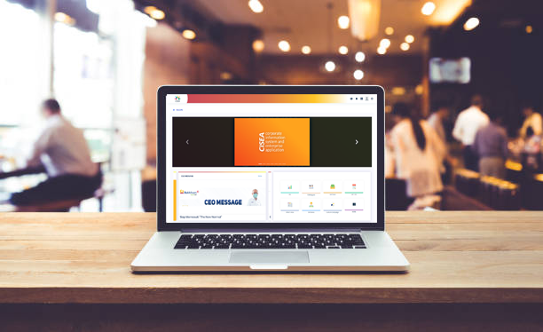
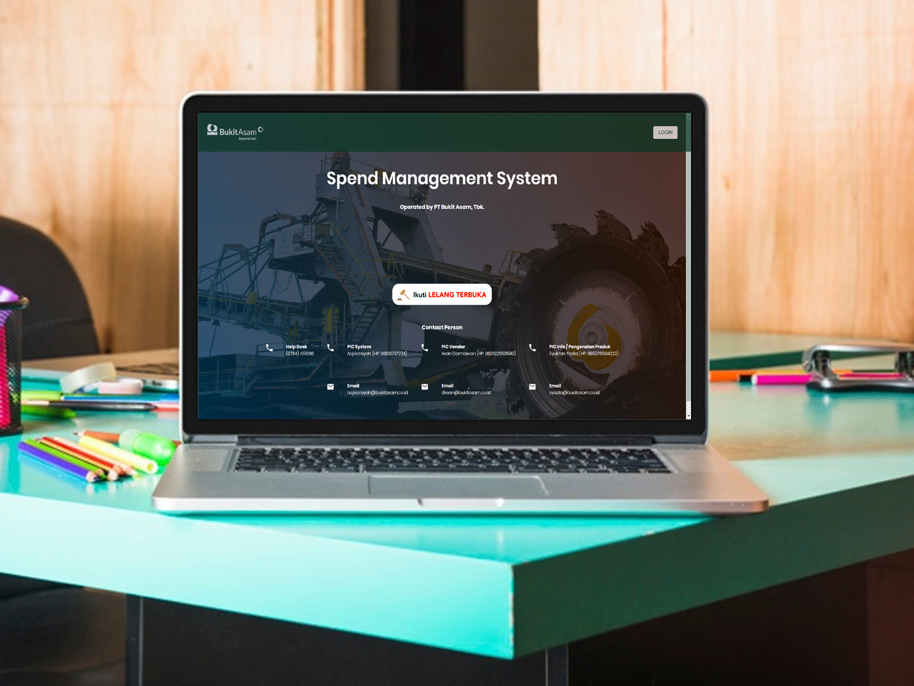
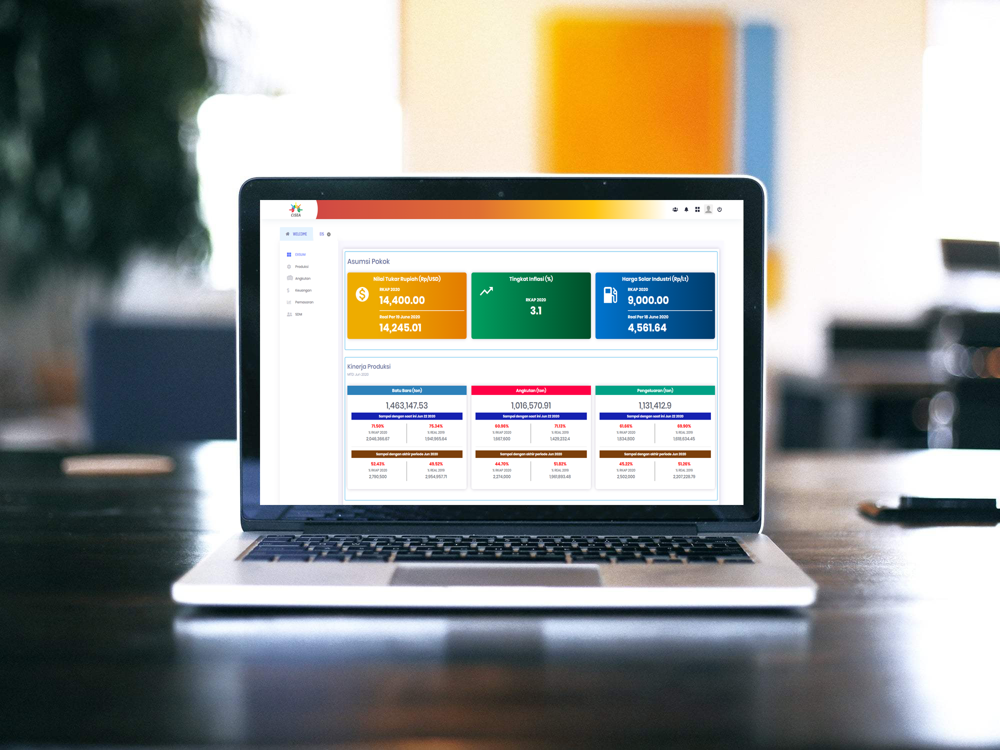
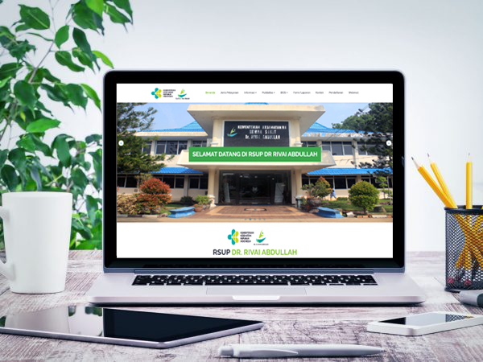
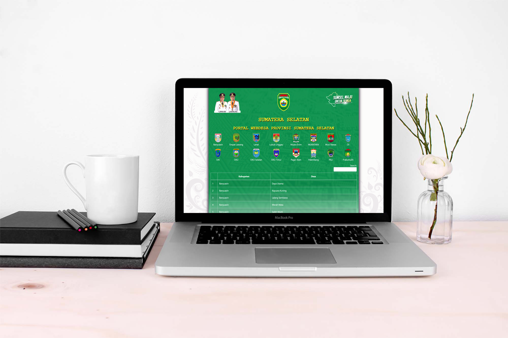

Enterprise architecture
ERP, operations, vendors, and data.
- SAP integration
- System design
Available for work / Remote worldwide
Engineering Lead for enterprise platforms, backend integrations, and AI-powered applications.
muhanggaohs@portfolio:~$
angga · engineering lead
● indonesia · UTC+7
muhanggaohs@portfolio:~$
Go › TypeScript › SAP › gRPC › PostgreSQL
muhanggaohs@portfolio:~$
> open to work · responds in <24h
muhanggaohs@portfolio:~$ clear
I work where business processes, legacy platforms, and modern software meet. From technical direction through production, I keep systems useful, reliable, and practical to operate.
ERP, operations, vendors, and data.
APIs, events, and reliable boundaries.
Useful enterprise knowledge access.
Direction through production reliability.
Selected enterprise, public-sector, and operational software. Some product details are intentionally withheld.
muhanggaohs@portfolio:~/work$ ls

Unified enterprise platform connecting core business processes across SAP, Exaquantum, Forte, and IoT systems for 1,500-2,000 users.

Modular SAP extension, vendor management, e-billing, and e-procurement workflows in one integrated platform.

Decision-support platform that brought operational and business information into a single view for enterprise leadership.

Integrated systems for patient administration, scheduling, medical records, and day-to-day hospital operations.
Digital public tax payment service, backed by tooling that moved legacy government records into modern infrastructure.

Province-wide portal supporting local-government communication and community access to public information.
experience
Jan 2021 - Present
Tanjungenim Lestari · Marubeni subsidiary
Leading architecture, enterprise integration, AI adoption, and full delivery for core business platforms. Promoted from Senior Software Engineer in 2025.
Nov 2024 - May 2026
Astro Technologies Indonesia · Remote
Built API gateway, data validation, anomaly detection, and event-driven monitoring systems using Go, gRPC, Kong, Redis, BigQuery, and Pub/Sub.
Jan 2024 - Dec 2024
VMI · Kuala Lumpur, remote
Delivered surgical planning, university scheduling, Hadith verification, and GIS environmental monitoring platforms.
Nov 2019 - Dec 2020
Join Development · PT Bukit Asam Tbk.
Shipped enterprise digitalization systems across executive analytics, procurement, mining operations, logistics, safety, and knowledge management.
2016 - 2019
Global Pelita Mandiri · Regional Revenue Agency · Bina Darma Technology
Built healthcare, public-sector, tax payment, travel, village information, and education platforms.
education & research
2019 - 2022
2014 - 2019
2023
certification
SAP BC400 · Scrum Professional Foundation · Network Security Specialist · Golang Web Services · AWS Cloud Practitioner Essentials
languages: ["Go", "TypeScript", "JavaScript", "PHP", "ABAP", "Python"]
backend: ["Node.js", ".NET", "FastAPI", "Spring Boot", "gRPC", "REST APIs"]
frontend: ["Vue.js", "React", "Next.js", "Angular"]
data: ["PostgreSQL", "SQL Server", "Oracle", "MariaDB", "Redis", "BigQuery"]
cloud_infra: ["GCP", "AWS", "Azure", "Kong", "Pub/Sub"]
enterprise_ai: ["SAP", "Dynamics AX", "IFS", "RAG", "LLM Orchestration"]
// 05 contact
Available for engineering leadership, enterprise integration, backend systems, and AI-enabled business applications.
muhanggaohs@portfolio:~$ cat contact.json
{
"based": "Indonesia",
"timezone": "UTC+7",
"status": "open to work"
}